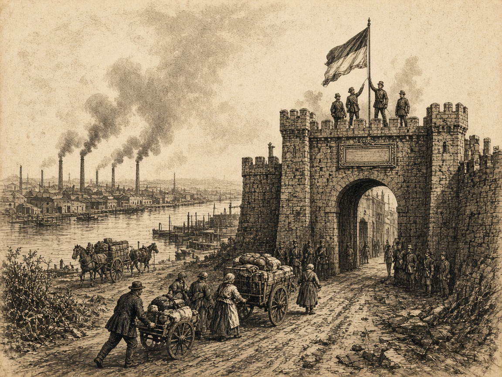
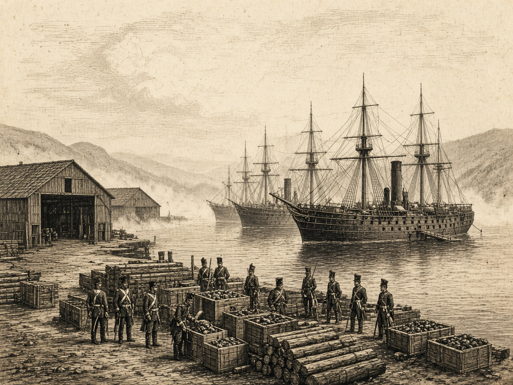

丹翠陥落 朱川、首都を朱澄へ移す
現代都市丹翠（70,9）がオラニウム領に 今期損害は朱川4,400／オラニウム400 人口2,500人の共和国

【総合部】第204期、朱川共和国の現代都市・丹翠（70,9）がオラニウム連邦の占領下になった。首都を失った朱川は、都を朱澄（69,8）へ移した。今期損害は朱川四千四百人、オラニウム四百人。人口は二千五百人、領土は四区画。名前付きの都は首都朱澄だけになった。町を失っただけでなく、守備兵と輸送船にも打撃が及び、住民の移動先は首都一つに絞られた。首都移転は政庁を保つ措置だが、残る四区画で食料と兵を支えられるかが次の課題となる。詳報は2面。

翠湖の軍港占領 黒潮は金野と開戦 泰平は蒼森へ宣戦
オリョルッル王国は翠湖自治州の軍港（45,33）を占領し、木材十八・石材七・鉱石十八・石油三を徴発した。黒潮自治国と金野伯爵領の戦争が始まり、泰平天国は蒼森辺境伯領へ宣戦布告した（開戦は第209期）。狐っ娘の尻尾教団と泰平の損害は一万千九百人対三千人。火災は十七件、人口減は七万七千五百人。国特集は9面のスルガ。